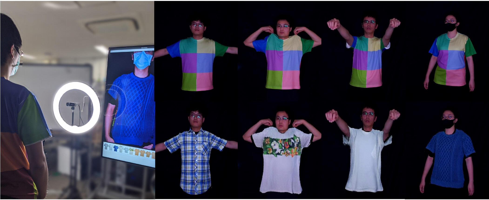

Real-time Image-based Virtual Try-on with Measurement Garment

Our real-time system allows the user to virtually try-on various garments using different interactions, such as stretching the body and pulling the garment. The user first wears the color-coded measurement garment (top row), and our system synthesizes the target garments with detailed wrinkles according to different motions.
Abstract
Virtual try-on technology that replaces a customer’s wearing with arbitrary garments can significantly improve the online cloth shopping experience. In this work, we present a real-time image-based virtual try-on system composed of two parts, i.e., photo-realistic clothed person image synthesis for the customers to experience the try-on result and garment capturing for the retailers to capture the rich deformations of the target garment. Distinguished from previous image-based virtual try-on works, we formulate the problem as a supervised image-to-image translation problem using a measurement garment, and we capture the training data with a custom actuated mannequin.
BibTeX
@inproceedings{10.1145/3476122.3484832,
author = {Chong, Toby and Shen, I-Chao and Qian, Yinfei and Umetani, Nobuyuki and
Igarashi, Takeo},
title = {Real-time Image-based Virtual Try-on with Measurement Garment},
booktitle = {SIGGRAPH Asia 2021 Emerging Technologies},
series = {SA '21},
year = {2021},
publisher = {Association for Computing Machinery},
address = {New York, NY, USA},
location = {Tokyo, Japan},
isbn = {9781450386852},
doi = {10.1145/3476122.3484832},
url = {https://doi.org/10.1145/3476122.3484832},
articleno = {13},
numpages = {2},
keywords = {Virtual Try-on, Deep image synthesis}
}Project pages are inspired by the websites of Quentin Becker and Zoë Marschner.